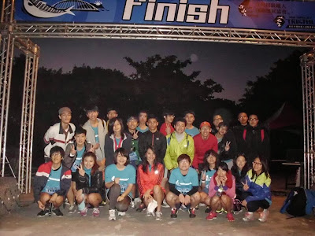
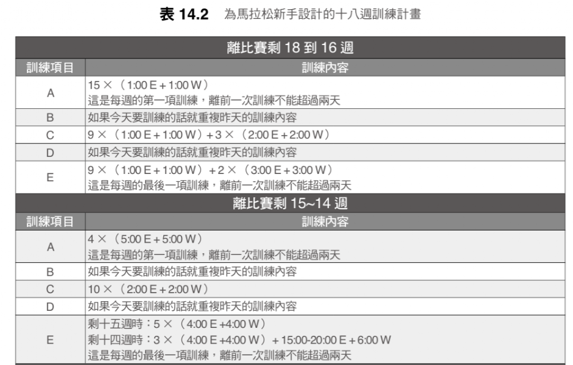

耐力網初馬課表&準備初馬的注意事項
前幾天在臉書上收到一則訊息，寫到：我十月底將挑戰初馬，正在使用耐力網的「耐力網全馬訓練計畫」，我的跑力值為43，一星期兩天肌力訓練，四天跑步訓練，目前都一直按表操課。主要想問是耐力網的課表每週LSD訓練都只有1小時45分，一直到比賽前都沒變，讓我擔心是否真的可以完成全馬賽程，還麻煩教練可以幫忙解答！

【2014東華大學馬拉松課期末考】
我可以理解他擔心練不夠，害怕無法完賽的心情，這種心情我也有過。剛好前兩年在東華大學開設「馬拉松課」時帶了不少初馬的學生訓練，有些經驗也讀了不少資料，所以趁此機會把有關初馬的訓練觀念和方法整理出來。
菜單要吸收得了才有用
對於準備初馬的跑者來說，切勿練太多，就算練多，身體也不一定吃得下去。訓練是靠累積，少量多餐才是訓練之道，暴飲暴食易傷身。那吃到多少的量就算「暴食」呢？以LSD來說，奧運級的馬拉松選手，E強度的課表「最多」只會練到2.5小時。
你可能會想「菁英跑者的馬拉松都在2小時30分之內就跑完了，我跑這麼慢，應該要再練多一點吧？」
這樣的想法是很危險的！你的跑量要能消化吸收得了才有用，不能練太多。吃下去但吸收不了，反而有害。因為既然連這種專職跑者(除了跑步就是吃飯休息和睡覺)，一次都只能吸收2.5小時的E強度課表，準備初馬的入門跑者又怎能跟他們一樣把LSD拉到2小時，甚至3小時以上呢？身體是吃不消的。
所以我、譽寅和耐力網工程師在設計初馬訓練計畫的邏輯時，最大量絕不超過2小時。每個人不同，耐力網會依一開始檢測出來的跑力來微調：
- 以跑力39的人來說，每週的LSD會從1小時開始增加，增加到1小時30分就不會在提升了。
- 以跑力43的人來說，每週的LSD從1小時15分鐘開始增加，過六週成長到1小時45分之後就不會再提升了。
所以絕對不要認為自己全馬要跑到4個小時，單堂E配速的LSD也拉長練到4小時。這種訓練方式將會導致過度訓練(Overtrainning)！
只要訓練持續下去，不用擔心自己到時比賽會跑不完。
實力是靠一次次的訓練累積出來的，以更極端的例子226公里的超鐵選手來說好了，他們絕不會在賽前練一次完成的賽程：游3.8公里、騎180公里再跑42.195公里，甚至連一次騎180公里的課表都不會做，但仍可以在這麼長距離的比賽中創下好成績，為什麼？因為實力是靠累積，累積需要的是不中斷地持續訓練，而單次的超量訓練時常就是「中斷訓練」的元凶。試想一下初馬跑者某個週末去練了3個半小時的LSD之後，接下來三天還能正常訓練嗎？應該接下來的一個星期都無法持續規律訓練了……當然，還是有人天生就具有超強潛能，超量也消化吸收得了，吸收多，成長也快(他們的初馬可能就破四或進三個半小時)……也比一般人更容易燒完跑步的熱情。這種跑者不多，但我認識不少，其中一個很熟的朋友，初馬就跑3小時20分，但後來就不再進步了，甚至現在也不太跑步了。
試想：第一場馬拉松就加大劑量給特效藥，之後再用溫和一點的菜單，又怎能刺激身體進步呢？
因此我對初馬跑者的建議是：練勤一點，但量少一點，進步慢一點比較好。即安全又能持久。
之前也有人問到：
準備第一場全馬，要花多少時間比較穩當？
我建議要至少要有十八週的時間比較妥當。之前在東華大學開設的「馬拉松課」，目標就是讓沒有路跑經驗的大學生在一個學期後（約十八週）完成一場全馬，訓練的成果還不錯，有興趣的可以參考這篇文章：http://www.don1don.com/archives/19658
當時是用《丹尼爾博士跑步方程式》第三版，第十四章中為馬拉松新手所設計的十八週訓練計畫。摘錄前五週訓練課表如下：

- W代表Walk快走；E代慢Easy輕鬆跑）
- 其中的A/B/C/D/E是指每週的五次訓練課表，一週最少練三次(A/C/E)，這是最重要的三次課表，而且A/C/E中間最好都能隔開一天(例如練每週一三五，或二四六)。試著練一兩個星期後，若時間與體力都負荷得了，才再增加B/D兩次訓練。
剛開始接觸路跑時的注意事項
- 建議先從走＋跑開始，以降低腿部的負荷。不管你會不會累，不要一開始就全部用跑的，先從快走＋慢跑的課表開始。
- 一開始就必須加入肌力訓練。建議先把肌力練起來再開始增加跑步的訓練量；以免體能進步比肌力快，造成體能太強，肌力太弱，如此下肢的關節會很容易受傷。有關入門跑者的肌力訓練可參考這篇文章：http://rocky549.blogspot.tw/2014/07/9.html
- 循序漸進不躁進是入門者最重要的觀念，一開始練跑很容易進步，但其實一開始進步太快，很容易提高運動傷害的風險。所以，一開始別練太多，進步慢一些反而是避免運動傷害的關鍵。
- 「休息」是訓練的一部分。別害怕休息，休息不是偷懶，因為變強不是發生在訓練時，而是發生在休息的時候。